1. The big picture
The system has three parts. Teachers use an app (a web page that installs on the phone and works offline). The app sends every request to one Google Apps Script web app. The web app reads and writes Google Sheets workbooks, which are the real records.

| Part | Where it lives | What it does |
|---|---|---|
| App (front end) | GitHub repository Asimalatif/cs-attendance, published by GitHub Pages at asimalatif.github.io/cs-attendance | index.html (main app), admission.html, grandtest.html, detention.html, student.html, sw.js (offline), manifest.json, these manuals. |
| Server (back end) | One Apps Script project, deployed as a Web app (Execute as: me, Who has access: Anyone). Its URL is API in index.html. | Checks the login, then runs the action asked for: read a sheet, save marks, make a PDF, check rosters … |
| Data | Google Sheets workbooks in the college Drive | Everything permanent: students, timetable, attendance, marks, logs. |
POST: { action, username, token, … }. The answer is JSON: { ok:true, … } or { ok:false, error:'…' }. Nothing is stored on the server itself except a short cache (CacheService) and a few Script Properties.2. Where data is saved

| Workbook (setting in the code) | Sheet | What is in it | Written by |
|---|---|---|---|
Users workbookUSERS_SS_ID = 1ARU8zMO2daJUfU_SIIo4baeSOG7qBPuni5TYRIRLBNY | Users | Name, username (col E), password, role (ADMIN / PRINCIPAL / HOD), department, Chief Proctor column (CP, CP1 …), phone | You, by hand. Password change from the app. |
| Timetable | Class / program / section, subject, teacher, period, theory days, practical days, room. Decides which sheets a teacher may mark. | Timetable editor web app | |
| NTT Settings | Period timings, evening sections | Timetable editor → Settings | |
| Transform-ALL-COLLEGE-STRENGTH | Master student list: Enroll#, name, father, PCS (section), Sub1–Sub7, quota, DOB, matric, photo, status … | Admissions page (adm_save), you | |
| Attendance Index | One row per daily attendance sheet: held, attended, %, low students, student data (JSON). Feeds the College overview and daily-app reports. | indexUpdate_ after every save; rebuildAttendanceIndex() | |
| Portal Data | UOP portal student data, for the admissions name search | Portal sync script | |
| Admission Log | Every admission and change: who, when, before, after | adm_save | |
| Left Students | Students moved out (left college) | College → Left students | |
| Guests | Guest students (student of section X attending in Y) | Guest add / remove | |
| Change History | Every changed attendance mark: who, sheet, day, before, after | auditAdd_ on save | |
| Chief Proctor Reports | Discipline reports from teachers, status | Report to Chief Proctor | |
| Substitutions, Student Codes, Student Results | Substitution duties; student result codes | Free teachers / results tools | |
Daily attendance (one per month)BOOK_IDS SEPT … JAN in Code.gs | SECTION MON SUBJECTe.g. FCS-1 D2 OCT COMPUTER SCIENCE | Row 3 headers, students from row 4; Roll No, name; day columns G…AK (1–31), T.A (attended, col AL), M.T (monthly test, col AM). Notes on the Roll No cell: LEFT SUBJECT, LEFT COLLEGE, GUEST|home. Day notes on the date header. | Attendance save (saveRecords_); sheet created by itself if missing (ensureSheet_) |
| Period Data (hidden) | The mark of every lecture when a day has more than one | Save | |
| Deleted Attendance Log | Deleted days / lectures | Delete attendance | |
| Student Remarks (September book only) | Teachers' private tags and comments | Tags & comments | |
Monthly attendance (one per month)MA_BOOKS in MonthlyBooks.gs (and LL_STORES in Leavelink.gs) | Section sheets | Per subject: Total Lectures (T.L), Attended (A.L), %. Filled by the teachers (current system). | Teachers by hand; Check everything adds/strikes students |
| ApprovedLeavesStore | Enroll#, Approved Leaves (number), leave dates (col K) | Leave in-charge | |
Monthly TestMT_BOOKS in MonthlyBooks.gs; if an ID is empty, the file named "September - MONTHLY TEST" is found in Drive | Section sheets | Per subject: Total Marks, Obtained Marks | App monthly test (mtToBook_), old portal, WebApp Logs |
Grand TestGT_CFG.BOOK_ID in GrandTest.gs | Section sheets · App Settings · Settings · WebApp Logs | Marks per subject · Opens and Total marks · deadline (cell B2) · every change (before/after) | gt_save, gt_settings |
DetentionDT_CFG.BOOK_ID in Detention.gs | Section sheets · App Settings · Settings · WebApp Logs · Pak culture Ethics | THEORY / PRACTICAL / TOTAL per subject, TOTAL (600), %, position · settings · log | dt_save, dt_settings |
Provisional CertificatesST_CFG.BOARD_BOOK in StudentSearch.gs | boardResult1STYEAR · 1styeardata2026 · App Board Links | Board result by Enroll# · board's 1st-year list (Roll No, Name, Father, Registration #, Marks, Grade, Position) · links confirmed in the app | You · board · st_board_link |
Admissions settingsADM_CFG.SETTINGS_BOOK_ID | Quota Settings · Program Sections | Seats per program/quota, sections — read only | You |
3. Users and roles
| Who | Decided by | Can |
|---|---|---|
| Teacher | A row in Users + her classes in Timetable | Mark / change her own sheets, tests, grand test, detention of her subjects; reports of her subjects; student search (any student, without contact/email/address) |
| HOD | Role HOD + department | As teacher + department overview and reports, free teachers |
| Principal | Role PRINCIPAL (or ADMIN) | Whole college overview and reports, full student search |
| Chief Proctor | Chief Proctor column CP / CP1 / CP2 … | Receives discipline reports, free teachers, full student search, confirm board links |
| Admin | ADMIN_USER = jcw@uop.edu.pk in Code.gs | Everything: Check everything, admissions, grand test / detention settings, left students, month sheets |
Login: the app sends username + password once and receives a token (valid 120 days). Changing a user's password in the Users sheet ends her token at once — use this if a phone is lost.
4. Server files and actions
All files are in one Apps Script project and share one global namespace. doPost in Code.gs checks the login and sends module actions to their file by prefix:
if (!user) return json_({ ok: false, error: 'BAD_LOGIN' });
if (/^adm_/.test(String(req.action || ''))) return json_(admRoute_(user, req));
if (/^gt_/.test(String(req.action || ''))) return json_(gtRoute_(user, req));
if (/^bk_/.test(String(req.action || ''))) return json_(bkRoute_(user, req));
if (/^dt_/.test(String(req.action || ''))) return json_(dtRoute_(user, req));
if (/^wr_/.test(String(req.action || ''))) return json_(wrRoute_(user, req));
if (/^st_/.test(String(req.action || ''))) return json_(stRoute_(user, req));
| File | Purpose | Actions |
|---|---|---|
| Code.gs | Login, attendance sheets, save, delete, guests, remarks, Chief Proctor reports, overview, reports data, registers, timetable, contacts, substitutions, health, left students, roster check/fix | login, sheets, whoami, sheet, save, delete_day, pdf, password, overview, overview_low, report_data, reg_opts, reg_find, reg_plan, reg_days, tt_all, contacts, report_save, reports_mine, report_delete, guest_search, guest_add, guest_remove, remarks_get, remarks_save, history, sub_list, sub_save, sub_delete, health, health_fix, sheets_status, left_preview, left_move, left_list, left_restore, roster_check, roster_fix, codes, results_info, portal_import, portal_key, portal_info, student_days, student_report … |
| Admissions.gs adm_ | New admissions and edits straight into the strength sheet | adm_init, adm_index, adm_next_roll, adm_portal, adm_check, adm_save |
| GrandTest.gs gt_ | Grand test entry, window, settings, award list, progress | gt_list, gt_get, gt_save, gt_pdf, gt_progress, gt_window, gt_settings |
| MonthlyBooks.gs bk_ | Monthly test workbook link (read/write), Check everything for monthly attendance, monthly test, grand test, detention | bk_list, bk_check, bk_fix, bk_batch · helpers mtFromBook_, mtToBook_, mtCheckBooks() |
| Detention.gs dt_ | Detention entry with theory/practical scheme, window, settings | dt_list, dt_get, dt_save, dt_pdf, dt_progress, dt_window, dt_settings |
| WorkbookReports.gs wr_ | Official sheet PDFs, toppers marks, 100% attendance, monthly attendance as report rows | wr_sections, wr_pdf, wr_marks, wr_fathers, wr_hundred, wr_rows |
| StudentSearch.gs st_ | Student search, full record, board result matching | st_find, st_profile, st_month, st_tests, st_board, st_board_link |
| Leavelink.gs | Approved leaves with dates → students marked L on those days | (used inside the sheet answer: lv) |
rebuildAttendanceIndex() (fills the Attendance Index; continues by itself), mtCheckBooks() (logs which Monthly Test workbook each month uses).5. Sign in and sync

The phone keeps the teacher's sheets (csa2_data) and a queue of unsent records (csa2_queue). The queue is sent when the app opens, every time internet returns and after each save. A record leaves the queue only when the server answers with its id in saved.
6. Saving attendance

- A teacher can only write sheets of her own classes (from the Timetable). Admin writes any.
- If the month's sheet does not exist yet, it is created with the students of that section and subject.
- LockService makes saves wait for each other, so two teachers never overwrite each other.
- Only P counts as attended; a lecture counts as held when at least one student is P or A.
7. Tests and exams

| Monthly test | Grand test | Detention | |
|---|---|---|---|
| Opens | Always | App Settings → Opens (default 1 Jan) | App Settings → Opens (default 1 Feb) |
| Closes | — | Settings!B2 deadline | Settings deadline |
| Total | Teacher enters | Admin, whole college (default 40) | Scheme in DT_CFG.SCHEME |
| Entries | number or A | number, A or L; all required | theory + practical, A or L; total computed |
| Written to | Daily sheet M.T column + Monthly Test workbook | Grand Test workbook + WebApp Logs | Detention workbook + WebApp Logs |
8. Admissions

Roll numbers come from ADM_CFG.ROLL_RANGES per program (next free number); 2nd-year migrations use ADM_CFG.MIGRATION. Seats come from the read-only admissions workbook. Each save is checked again on the server (adm_check) and has a client id, so a save repeated after a lost connection is not added twice.
9. Check everything (sheets vs strength)

A section sheet should contain every student whose PCS is that section ("F.A-1 Optional Subjects" = everyone of F.A-1). Missing students are appended with the format and formulas of the row above. Extra students are struck through if they have any marks, else their row is deleted. Daily books use rosterCheck_ / rosterFix_ (Code.gs), the others bk_check / bk_fix / bk_batch (MonthlyBooks.gs). The workbook list is cached 30 minutes.
10. Reports

- Attendance reports (attendance, shortage, early warning, 100%) are built on the phone from rows
{cls, sub, teacher, mon, mt, st:[[roll, name, attended, held, test, off, guest]]}. Rows come from the monthly workbooks (wr_rows, cached 30 min) and/or the daily Attendance Index (report_data). With Monthly + daily, for each section + subject + month the monthly row wins when it has lectures. - Official sheet PDFs are made on the server (
wr_pdf) with HtmlService → PDF, in the old portals' layout. - Toppers:
wr_marksreads every section sheet of the exam once (cached 20 min); ranking, shifts and the PDF are done on the phone. Evening sections come from NTT Settings.
11. Student search and board result
st_find searches the strength sheet. st_profile returns the strength-sheet row (columns matching ST_CFG.PRIVATE — contact, mobile, phone, email, address — only for admin, principal and Chief Proctor). st_month reads her section sheet (+ optional sheet) in the monthly attendance workbook, her approved leaves, and her rows in the daily sheets for the calendar. st_tests reads the monthly test, grand test and detention workbooks.

Name matching smooths spellings (Muhammad/Mohd, double letters, ee/i, oo/u, titles), compares every word with Jaro-Winkler similarity, weighs student name 60% and father 40%, and accepts only a clear match whose own (non-family, non-common) name words and father's words really match. Positions 1–20 of the Position column are shown as Distinction (ST_CFG.DISTINCTION).
12. Approved leaves
The leave in-charge enters approved leaves in ApprovedLeavesStore of each monthly workbook. Leavelink.gs reads the leave dates (column K, e.g. 10-Oct-2026 to 12-Oct-2026) and sends them with each sheet (lv), so the app pre-marks those students L (cached 5 minutes). The number of approved leaves is added to the overall % in shortage reports and the student record.
13. The app (phone side)
| File | Contents |
|---|---|
| index.html | The whole main app in one file: styles (the JCW theme block is last), the API address API, APP_BUILD (version text), screens (Home, Attendance, Reports, College, Profile, Search, Free teachers, Contacts), the PDF tools (window.JCWPDF, jsPDF from cdnjs), the in-app help, the registers add-on. |
| admission.html, grandtest.html, detention.html, student.html | Separate pages sharing the login (csa2_user, csa2_pass in localStorage). |
| sw.js | Service worker: keeps the pages offline. VERSION must change on every release so phones update. |
| manifest.json, icon-*.png, jcw-logo.png | Install name, colours, icons, logo. |
| manual.html, admin-manual.html, manual-img/ | These manuals and their screenshots and diagrams. |
What the phone stores
Key (localStorage, prefix csa2_) | Meaning |
|---|---|
| user, pass (token), teacher, admin, scope, isCP | Who is signed in and her rights |
| sheets, data | Her sheet list and the downloaded sheets (offline) |
| queue | Unsent records — never clear while not empty |
| tt2, ttAll, ov | Timetable, college timetable, college overview (cached) |
| remarks, rq, myrep | Tags/comments, reports waiting, my reports |
| attSrc, tp, wr, exTab, tsize, aFold … | Screen choices (attendance source, report choices, tab, text size, folded list) |
IndexedDB: jcw-wr (last 8 official PDFs), admission index. Caches: the service worker's csa-vNN and jcw-pdf-tools-v1.
14. Settings reference
| Setting | File | Meaning |
|---|---|---|
BOOK_IDS | Code.gs | Daily attendance workbook of each month |
USERS_SS_ID, ADMIN_USER | Code.gs | Users workbook; the admin login |
HEADER_ROW 3, FIRST_ROW 4, DAY_COL1 7 (G), T.A = AL, M.T = AM | Code.gs | Daily sheet layout |
LOW_PCT 73 | Code.gs (and LOW in index.html) | Shortage limit |
MA_BOOKS, MT_BOOKS | MonthlyBooks.gs | Monthly attendance and Monthly Test workbooks |
LL_STORES | Leavelink.gs | Workbooks with ApprovedLeavesStore (same as MA_BOOKS) |
GT_CFG (BOOK_ID, DEFAULT_TOTAL 40) | GrandTest.gs | Grand Test workbook and default total |
DT_CFG (BOOK_ID, SCHEME, DEFAULT_SCHEME, PASS, OPENS_MONTH, ALIASES) | Detention.gs | Detention workbook, marks per subject [theory, practical] |
ADM_CFG (BOOK_ID, SETTINGS_BOOK_ID, PROGRAMS, ROLL_RANGES, MIGRATION, POOLS) | Admissions.gs | Admissions rules and roll number ranges |
WR_CFG (THRESHOLD, DT_FAIL 0.4) | WorkbookReports.gs | Shortage limit of official PDFs (0 = app's 73), detention red line |
ST_CFG (PRIVATE, BOARD_BOOK, BOARD_BY_ENROLL, BOARD_LIST, BOARD_TOTAL 600, DISTINCTION 20, MATCH_MIN, LABELS) | StudentSearch.gs | Hidden fields for teachers, board workbook and sheets, matching strictness |
API, APP_BUILD, LOW | index.html | Server address, version text, shortage limit |
VERSION | sw.js | Offline cache version — change on every release |
15. New session / month checklist
Before a new session (August)
- Make the new daily attendance workbooks (Sep–Jan) and put their IDs in
BOOK_IDS(Code.gs). - Monthly attendance workbooks →
MA_BOOKS(MonthlyBooks.gs) andLL_STORES(Leavelink.gs). - Monthly Test workbooks →
MT_BOOKS, or leave empty and name them "September - MONTHLY TEST" …; then runmtCheckBooks(). - New Grand Test and Detention workbooks →
GT_CFG.BOOK_ID,DT_CFG.BOOK_ID. - Board results: new sheet names in
ST_CFG.BOARD_LIST(e.g. 1styeardata2027) and the workbook inST_CFG.BOARD_BOOK. - Admissions:
ADM_CFG.ROLL_RANGES,MIGRATIONand the session/batch. - Update the Timetable and NTT Settings; check the Users sheet (new teachers, roles, CP).
- Deploy a new version (section 16). Run
rebuildAttendanceIndex()once if the daily books already have data.
Every month
- College → Month sheets: check next month's sheets exist.
- After admissions or section changes: Check everything → Fix.
- Grand test (January) and detention (February): set Opens, Total and Deadline in their Settings tab.
16. Deploying a change
Server (Apps Script)
- Edit or paste the file in the Apps Script editor and Save.
- Deploy → Manage deployments → Edit (pencil) → Version: New version → Deploy. Keep the same deployment so the URL does not change.
- If Google asks for new permissions (e.g. Drive), allow them.
- Test once from the app (sign in as admin).
App (GitHub)
- Change the file in the repository (a pull request into
main). - Change
APP_BUILDin index.html andVERSIONin sw.js. - GitHub Pages publishes in about a minute; phones update themselves the next time the app opens with internet (or ⋯ → Check for update).
17. Adding a new feature
Follow the same pattern as the modules: one new server file with its own prefix, one router line, and a card or page in the app.
/* NewThing.gs — server */
var NT_CFG = { BOOK_ID: '...' };
function ntRoute_(user, req) {
try {
switch (String(req.action || '')) {
case 'nt_list': return ntList_(user, req);
case 'nt_save': return ntSave_(user, req);
}
return { ok: false, error: 'UNKNOWN_ACTION' };
} catch (e) { return { ok: false, error: String(e.message || e) }; }
}
// doPost, under the other module lines:
// if (/^nt_/.test(String(req.action || ''))) return json_(ntRoute_(user, req));
// index.html — app
const r = await api({ action:'nt_list' }, 60000);
if(!r.ok) throw new Error(r.error);
- Check rights with the existing helpers:
isAdmin_(user),scopeOf_(user),getAssignments_(user),isCP_(user). - Read students with
getMaster_()(rows: Enroll#, name, section, subjects, father). Find a section sheet withgtFindSheet_(book, cls). - Use
LockServicewhen writing, write whole ranges withsetValues, and log changes like WebApp Logs. - Cache heavy reads with
wrCachePut_ / wrCacheGet_(chunked, up to ~6 h). - Use names not used by another file: every file shares one namespace.
18. Troubleshooting
| Symptom | Cause and fix |
|---|---|
| App says "The server is not updated yet (X)" / UNKNOWN_ACTION | The module file or its router line is missing, or a new version was not deployed. |
| "Server sent a web page instead of data" | Deployment access is not "Anyone", or API points to an old deployment. |
| Reports show only a few sections / no September | Attendance source: daily app data is sparse; use Monthly + daily. For daily data run rebuildAttendanceIndex(). |
| A student is not in a teacher's list | PCS / Sub1–7 in the strength sheet, or the section sheet is not updated → Check everything. |
| Monthly test marks not shown | Wrong Monthly Test workbook → run mtCheckBooks(), fix MT_BOOKS. |
| Board result position missing | Old cache: the key in stBoardData_ changes when its layout changes; or the sheet names differ from ST_CFG. |
| "Exceeded maximum execution time" | Apps Script stops after 6 minutes; checks and fixes work in rounds — run again. |
| Phones show an old version | VERSION in sw.js was not changed; or the phone has been offline. |